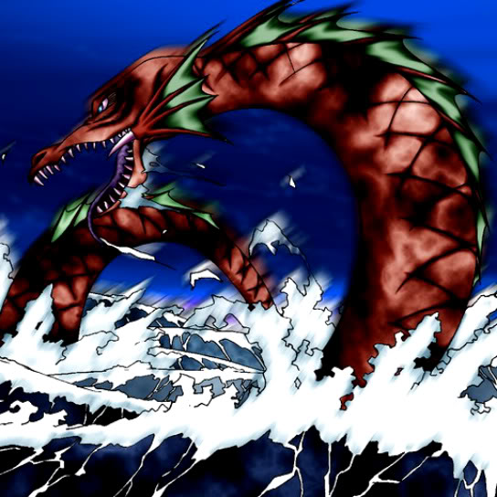

Roaring Ocean Snake

Description: "When engaged in battle, transforms the space it occupies into Sea terrain. When this card is flipped face-up, transforms all adjacent spaces into Sea terrain."
STATS
ATK: 2100
DEF: 1800DECK COST
Deck Cost per Card: 44EFFECT NOT IMPLEMENTED
Fusion List (3 Possible Fusions)
- Roaring Ocean Snake + Kairyu-Shin = Aqua Dragon
- Roaring Ocean Snake + Sea King Dragon = Aqua Dragon
- Roaring Ocean Snake + Spike Seadra = Aqua Dragon